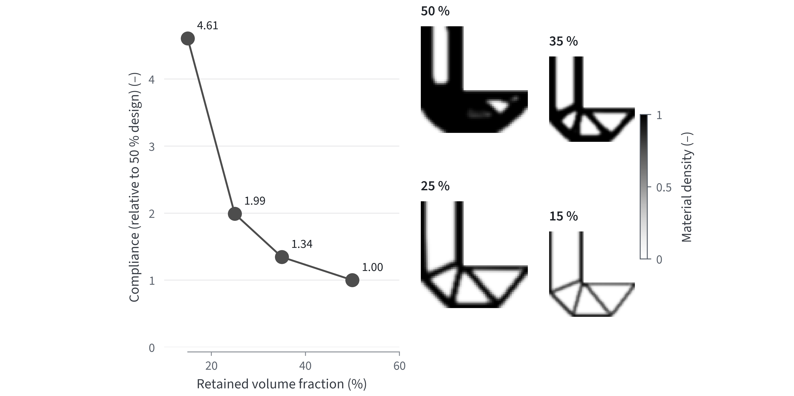
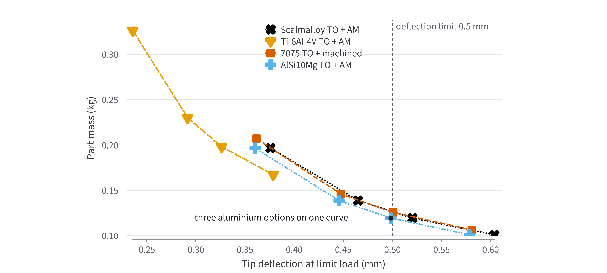
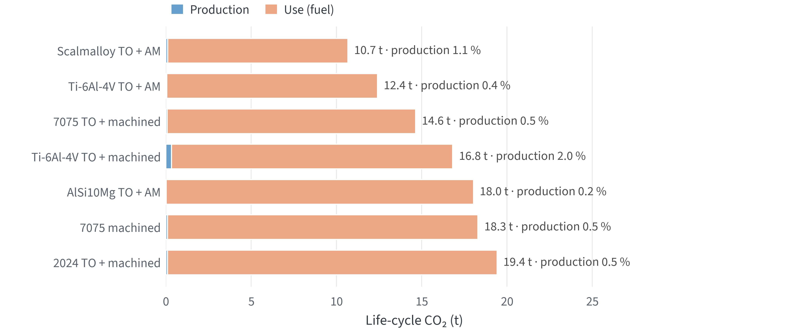
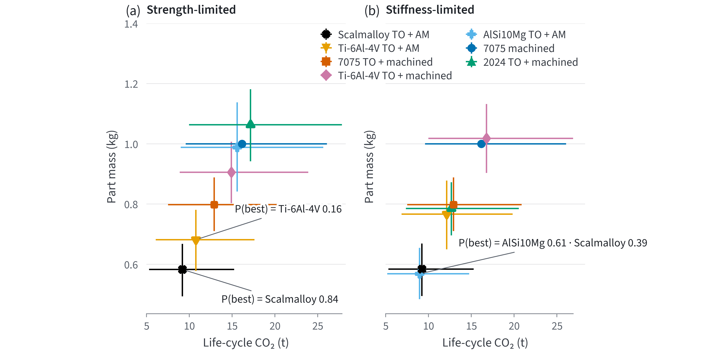
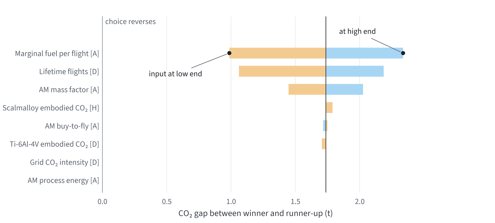
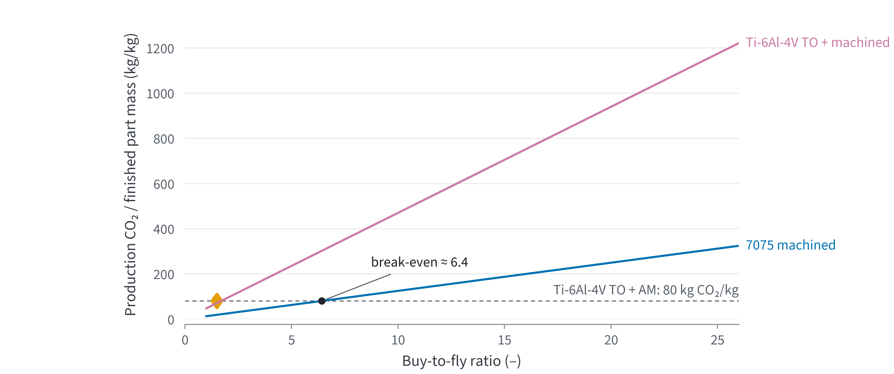

Light-weighting decisions
Pre-competition preparation report for topology optimisation, material selection and life cycle
Contents
- Where we are heading
- The likely form of the task
- What we bring ready to competition day
- Decision catalogue
- Trade-off study for the human reader
- Trade-off study for an AI agent
- Data tables, contradictions and gaps
Source tags
The tag next to each number shows how the number was obtained. A value tagged D was read from its source in the session that prepared this report. A value tagged A was read from the full text by a sub-agent, and the report author did not read it a second time. A value tagged S was seen only in a search summary and does not go on a slide on its own. A value tagged H was calculated in this study and carries the weakest tag of its inputs. The Y tag means an assumption or an engineering judgement.
File paths are relative to the project root (D:\Masaustu\Ideathon 2026). The calculations were done with the aerokit package. The result of the full test suite is in Section 6. Every number produced by code can be reproduced from the files named below.
1. Where we are heading
The Synopsys introductory presentation dated 27 October 2026 lists four skills for the 2026 Ansys task (p. 12) [D]. These are structural finite element analysis, optimisation and trade-off, material selection and life-cycle thinking. The recommended courses are topology optimisation in Ansys Discovery, Ansys Mechanical, Granta EduPack performance indices and the Eco Audit tool (pp. 12–13) [D]. The aircraft sizing and STK mission planning of the 2023 card are not on this list.
We think the task will be to light-weight an aircraft structural part, select its material and defend the decision with life-cycle CO₂ [Y]. Under this assumption seven options were compared in five scenarios [H]. Four options are machined aluminium or titanium parts, and three of these go through topology optimisation. Three options are produced by topology optimisation and additive manufacturing. In this report topology optimisation is abbreviated TO and additive manufacturing AM. Table 1 gives the winners. The direction comes down to these six points:
- In a flying part, mass selects the material. The production phase did not exceed 2.0 % of lifetime CO₂ in any option [H].
- Scalmalloy TO + AM is recommended if strength governs, and AlSi10Mg TO + AM if stiffness governs [H].
- In a part that burns no fuel, the winner is set by the balance between the production footprint and the monetary value of mass; the satellite scenario shows this balance [H].
- Titanium stays in the race only through the AM route. The yield strength of Scalmalloy is 475 MPa at room temperature, 319 MPa at 150 °C and 60 MPa at 300 °C [D]. For a hot part the candidate is therefore titanium.
- On the mass and CO₂ axes, the only input that can reverse the choice is the mass factor of the AM route, and it is the first number to measure on competition day [H]. Once cost enters, the choice loses its robustness and the AM manufacturing cost becomes decisive (Section 5).
- In a rehearsal with a made-up card, deflection governed the design and the three aluminium options did not separate. In a planar bracket, machined 7075 competes with additive manufacturing [H].
| Scenario | Criterion | Winner | Mass (kg) | Lifetime CO₂ (kg) | P(best) | Runner-up |
|---|---|---|---|---|---|---|
| A320 bracket, strength | CO₂ | Scalmalloy TO + AM | 0.58 | 10,677 | 0.84 | Ti-6Al-4V TO + AM |
| ATR 72 bracket, strength | CO₂ | Scalmalloy TO + AM | 0.58 | 2,684 | 0.81 | Ti-6Al-4V TO + AM |
| A320 bracket, stiffness | CO₂ | AlSi10Mg TO + AM | 0.57 | 10,371 | 0.61 | Scalmalloy TO + AM |
| Satellite bracket, strength | production CO₂ only | AlSi10Mg TO + AM | 0.99 | 28 | 0.70 | Ti-6Al-4V TO + AM |
| Satellite bracket, strength | penalty function Z | Scalmalloy TO + AM | 0.58 | 117 | 0.86 | Ti-6Al-4V TO + AM |
The values were taken from the studies/tradeoff/out/*.results.json files [H]. P(best) is the share of samples in which the option gets the best score when the inputs are sampled uniformly over the stated ranges. It is not a probability of being correct. The CO₂ values of alloys that share the same primary aluminium route were sampled together. Z is defined in Section 5.
2. The likely form of the task
The presentation contains no task text. It contains only the skills, the courses and the note "See you on November 5th!" (p. 15) [D]. According to Regulations v1.1, the card will be released on the morning of 4 November and the competition blocks run on 5–6 November. This document was read on 25 October and was not read again today.
The only public Ansys Ideathon card is from 2023 [A]. The card asks for conceptual aircraft design and STK mission planning and says not to go into structural detail [D]. The 2024 Ansys task text has not been published [A].
The closest of the similar academic tasks is the Ansys bicycle crank example [A]. The example links material selection in EduPack, topology optimisation in Discovery, a simplified life-cycle analysis and trade-off indicators in one workflow. The 2013 GE engine bracket challenge specified the material as Ti-6Al-4V and the minimum wall as 1.27 mm [A]. The part had to stay inside the original envelope and carry four load cases.
| Rank | Task form | Use phase | Ready scenario file |
|---|---|---|---|
| 1 | Fuselage or engine bracket / fitting, 1–3 static load cases | fuel (marginal) | bracket_a320_*.json, bracket_atr72_strength.json |
| 2 | UAV or eVTOL arm / boom | battery electricity | none; the A320 file is adapted with grid and energy inputs |
| 3 | Satellite bracket (g load + frequency limit) | none; launch cost | bracket_satellite_strength.json, bracket_satellite_penalty.json |
| 4 | Cabin seat or tray part, high volume | fuel | A320 file |
| 5 | Wing rib, landing gear fitting, door hinge | fuel | A320 file, index changes |
Installation status
On 1 November the C: drive of this laptop had 3.42 GB of free space, and Ansys Student requires 50 GB [D]. Ansys Student is not installed. The graphics card is a GTX 1660 Ti with the Turing architecture. The Discovery list in the presentation includes Kepler, Maxwell and Pascal but not Turing (p. 9) [D]. Granta EduPack is not part of the student package [D].
If Discovery does not open, topology optimisation is done in Mechanical. If EduPack is not available, the material data come from the sourced tables in Section 7.
3. What we bring ready to competition day
The first half of a five-hour slot consists of decisions that can be made before the task card is read. The default values, sources and code for these decisions are ready. When the card is released, only the numbers the card gives and the topology result will be entered.
| Step | Ready | To be filled when the card arrives |
|---|---|---|
| Load factor | For a fitting, ultimate load = 1.5 × 1.15 = 1.725 × limit load (14 CFR 25.303, 25.625) [A] | Limit loads; if the card gives ultimate loads, the 1.5 is not added |
| Performance index | Both the stiffness (beam_stiff) and the strength (beam_strong) index are run [H] | Which constraint governs, from the verification analysis |
| Candidate materials | 7 options, with sourced properties and CO₂ values (Section 7) | EduPack alloy records and prices |
| Temperature | Scalmalloy stays below 100 °C; above that, titanium [D] | Operating temperature of the part |
| Topology settings | Volume sweep 50 / 35 / 25 / 15 %, as a range; either a 45° overhang or a minimum member size ≥ 2.5 × element size, not both [A] | Design envelope, preserved regions, minimum wall |
| Verification | Smoothing, reconnecting the interfaces, a verification solve in each load case; mesh refinement if within 5 % of the limit [A] | Verified mass → route mass factor |
| Life cycle | Marginal fuel per flight, number of flights, grid and fuel CO₂ factors, with their ranges | Aircraft class and stage length |
| Trade-off | scripts/tradeoff_study.py: nominal ranking, Pareto, Monte Carlo, tornado | Re-run with the inputs above (≈ 10 s) |
| Jury outputs | Volume sweep curve (Figure 5 template), before/after table per load case, phase bars + sensitivity [Y] | Visuals |
The volume sweep template
The volume sweep was run in advance on the L-bracket benchmark problem (aerokit SIMP, 60 × 60 elements, density filter) [H]. When the retained volume fell from 50 % to 25 %, compliance rose 1.99 times, and at 15 % it rose 4.61 times. The knee of the curve lies between 25 % and 35 %, so on competition day the sweep is set up around this range [Y].

| Retained volume (%) | Relative compliance | Iterations | Greyness measure (%) | Part mass (g) | σ ultimate / Rp0.2 | Deflection limit 0.5 mm |
|---|---|---|---|---|---|---|
| 50 | 1.00 | 103 | 11.0 | 197 | 0.36 | passed (0.38 mm) |
| 35 | 1.34 | 275 | 17.3 | 139 | 0.39 | passed (0.47 mm) |
| 25 | 1.99 | 109 | 20.2 | 101 | 0.46 | failed (0.60 mm) |
| 15 | 4.61 | 334 | 21.9 | 63 | 0.63 | failed (0.92 mm) |
In the first 20 minutes of the card
- Write the requirements with their units in a table: loads, interfaces, displacement or stiffness limit, safety factor, manufacturing route, operating temperature.
- Identify the aircraft or vehicle of the part and copy the scenario file closest to it.
- Narrow the option list with the material or process constraint the card gives. 7075 and 2024 are not offered on the AM route. According to Liang et al. 2025, Al7075 shows solidification cracking in laser powder bed fusion and needs a nucleant for crack-free printing [D]. The same paper reports that 2024 has also been printed after modification with Ti nanoparticles.
- Enter the card into the
studies/cards/template_cantilever.jsonorrehearsal_l_bracket.jsontemplate and run the commandpython scripts/card_day.py. The command produces the designs, the verification, the ranking and the English presentation figures in one or two minutes [H]. - Get the overall ranking with
python scripts/tradeoff_study.pyand use the first three inputs of the tornado list as the measurement order.
Rehearsal of the first half with a made-up card
A made-up task card was solved end to end to see whether the preparation really covers half of the way [H]. The card is not official. It gives an L-shaped design space of 120 × 120 mm for an A320 cabin bracket, an arm width of 48 mm and a thickness of 10 mm. The top edge is bolted and a vertical limit load of 2.0 kN acts at the arm tip. Tip deflection at limit load is at most 0.5 mm, and the operating temperature is 20–60 °C.
The ultimate load was 1.5 × 1.15 × 2.0 = 3.45 kN. The topology designs were taken from the sweep in Figure 5, and a run at 30 % volume was added. Each design was converted to black and white with a threshold of 0.5 and solved with 2 mm plane-stress elements [H]. The element-centre von Mises calculation reproduced σ = P/(h·t) for a plate under uniform tension with a ratio of 1.0000 [H]. Three rows of elements around the load point and the bolted edge were excluded from the evaluation because of singular stresses.
| Option | Retained volume (%) | Mass (g) | σ ultimate / Rp0.2 | Deflection (mm) | Lifetime CO₂ (kg) |
|---|---|---|---|---|---|
| AlSi10Mg TO + AM | 35 | 139 | 0.86 | 0.462 | 2527 |
| Scalmalloy TO + AM | 35 | 139 | 0.39 | 0.482 | 2551 |
| 7075 TO + machined | 35 | 146 | 0.38 | 0.464 | 2661 |
| Ti-6Al-4V TO + AM | 25 | 167 | 0.27 | 0.393 | 3058 |

Deflection governs the design for this card. The strength margin is wide for Scalmalloy, 7075 and titanium and narrow for AlSi10Mg, where the σ ultimate / Rp0.2 ratio is 0.86 [H]. The three aluminium options meet the deflection limit at the same retained volume, 35 %. The uncertainty in E for AlSi10Mg is ±3 GPa, or about 4 % [D]. The deflection difference between the options is of the same size. For this card the aluminium alloys do not separate on deflection, and the choice is set by strength margin, manufacturing and price [H].
The topology result of a planar bracket is 2.5-dimensional, so it is also suitable for machining. The buy-to-fly ratio of the 7075 part relative to stock plate came out at 2.8, far below the default of 8 in the studies [H]. The mass advantage of AM disappears in this geometry. For AM to make a difference, the part has to call for a three-dimensional shape that cannot be cut from plate [Y].
The same 35 % design was solved again on meshes refined two and four times [H]. Tip deflection rose by 2.2 % and 3.7 %. The 2 mm mesh underestimates deflection by at least 3.7 %. The deflections in Table 5 were therefore multiplied by 1.037. AlSi10Mg passed the limit at 30 % volume with 0.499 mm before the correction and fails with 0.517 mm after it.
With refinement the maximum von Mises stress rose 1.39 and 1.92 times, while the 99th-percentile value changed by only 1.8 % [H]. This is the signature of the singular point at the inner corner of the L. In the real part the corner is given a fillet. Stress is read away from the corner or with a converging measure. The strength ratios in Table 5 were calculated from the largest value outside the corner on the coarse mesh.
The rehearsal used a two-dimensional plane-stress model and does not replace the three-dimensional analysis in Discovery. The command is python scripts/rehearsal_bracket.py, and the results are in the file studies/rehearsal/rehearsal.json.
4. Decision catalogue
The detailed evidence for the 25 decisions in the catalogue is in the file reports/Havacılık hafifletme karar kataloğu.md. The machine-readable version is in the file studies/tradeoff/decision_rules.json, together with rule D-26 from the rehearsal. Table 6 gives the defaults and the deviation conditions in slot order.
| No. | Decision | Default and evidence | When to deviate |
|---|---|---|---|
| D-25 | Tool chain | Mechanical + aerokit [D] | EduPack and Discovery if they work |
| D-04 | Load factor | 1.725 × limit; A-basis on a single load path [A] | For AM, show 1.25 by analogy with the casting factor; do not stack factors (25.619) |
| D-12 | Load cases | ≥ 3 independent cases, at ultimate load [A] | If the card gives a single load, write the extra cases as assumptions |
| D-07 | Index | Stiffness and strength index together [D] [H] | Thin shell or long strut: panel or buckling index |
| D-01 | Material family | Strength-limited: Scalmalloy AM; stiffness-limited: AlSi10Mg AM; above 100 °C: Ti-6Al-4V AM [H] [A] | Contact with CFRP: titanium or glass-ply isolation; cabin: no magnesium |
| D-02 | Route | AM if the machined buy-to-fly exceeds ≈ 1.8 [A] [H] | Prismatic part; forging with low buy-to-fly |
| D-03 | Volume target | 50 / 35 / 25 % sweep [A] | Over-designed reference: go down to 15–20 % |
| D-11 | Manufacturing constraint | Overhang 45° or member size ≥ 2.5 h [A] | Tetrahedral mesh + pull-out: ≥ 4 h |
| D-26 | Governing constraint | On the same topology, strength margin and deflection are read together for each candidate [H] [D] | If the aluminium alloys stay within the E uncertainty, the choice is made on strength margin, manufacturing and price |
| D-13 | Verification | Verification solve in every case [A] | Mesh refinement if closer than 5 % to the limit |
| D-14 | Fatigue | AM Ti-6Al-4V: HIP + machining of fatigue surfaces [A] | — |
| D-17 | Material CO₂ | EduPack record + low and high grid case [D] [A] | Without EduPack, Tables 9 and 11 |
| D-05 | Use phase | Marginal fuel per trip [A] [H] | Non-aircraft vehicle: f/(1−f) with its own mission fuel fraction |
| D-06 | End of life | EduPack recycled-content method; end-of-life potential as a separate bar [A] | A separate case if the jury asks for recycling credit |
| D-09 | Trade-off | Pareto (unweighted); if cost enters, Z = C + α·m [D] [A] | If a single number is requested, give it with an α range and the break-even α* |
| D-23 | Headline claim | % and kg saving + binding constraint + CO₂ + P(best) + reversing input [Y] | — |
5. Trade-off study for the human reader
The mass of each option was calculated from the governing index ratio relative to the reference part (7075-T6, machined, 1 kg) and from the mass factor of the route. Production CO₂ is the sum of the embodied CO₂ of the purchased material and the grid CO₂ of the process electricity. Use CO₂ is the product of mass × marginal fuel per flight × number of flights × 3.16 kg CO₂/kg fuel [H]. The input ranges are in the tables in Section 7.

In Figure 1 the mass of the part is what separates the options. The share of the production phase does not exceed 2.0 % in any option, so the production effect of the route choice moves the total by at most this much. The headline number of the eco audit is therefore the verified mass.

beam_strong index and the right panel the beam_stiff index.In the stiffness-limited panel the AlSi10Mg part is 0.569 kg and the Scalmalloy part 0.581 kg, a difference of 2.1 % [H]. The difference comes from the E moduli and the scandium footprint. The calculation used 72 GPa for AlSi10Mg and 69 GPa for Scalmalloy [D]. AlSi10Mg leads in 61 % of the samples [H].

The difference in Figure 3 is moved most by the fuel factor, the number of flights and the AM mass factor. The embodied CO₂ range of Scalmalloy, 68–128 kg/kg, keeps the difference within only 1.74 to 1.79 t [H].

The buy-to-fly ratios of the ORNL machined brackets are 8 and 33 [A]. According to Figure 4, at these ratios the production CO₂ of machined titanium per finished kilogram is about 5 to 19 times that of AM titanium [H]. If titanium is chosen, the route is AM; machined titanium ranked between 4th and 7th place in the five scenarios [H].
A part with no use phase: the satellite
Fuel does not enter the satellite scenario. When only production CO₂ was counted, AlSi10Mg AM came first in 70 % of the samples and Scalmalloy fell to sixth place [H]. One kilogram of Scalmalloy contains 0.35 kg of AlSc2 master alloy, and one kilogram of this master alloy carries 172 kg CO₂e (Table 11) [D].
In a satellite the value of mass is measured by launch cost. The penalty function was set up as Z = α·mass + c·CO₂ [D]. For the value of mass, the lower end of the exchange constant Ashby gives for spacecraft was taken, 3000 per kilogram [D]. The carbon price is the 2025 EU ETS average, 74.31 € per tonne [D]. On this criterion Scalmalloy came first in 86 % of the samples [H].
For the ranking to reverse, the carbon price would have to be ≈ 13,800 €/t, about 186 times the 2025 average [H]. The calculation treats pounds sterling and euros as the same order of magnitude, because the currency symbol in the Ashby table could not be read [Y].
Assumptions that could change the result
- AM mass factor 0.6. It was taken from the 30–50 % savings in flying AM parts [A]. With the machined TO factor at 0.8, the machined route wins if the AM factor exceeds ≈ 0.82, with 7075 for strength and 2024 for stiffness [H].
- Scandium footprint. The lower bound is the new production route from red mud by Hengevoss et al., and it gives Scalmalloy 68 kg CO₂/kg [H]. The upper bound is 128, because the same paper gives the GWP of current production as about twice that of the new route. For flying parts Scalmalloy stayed ahead over the whole of this range.
- Powder production. Atomisation was not added. According to ORNL it increases the energy of titanium powder by 2.4 % [A].
Once cost enters, the decision loses its robustness
Material price and manufacturing cost were entered with a separate range for each material and route pair. The ranges are in Table 16 [A] [S] [Y]. The criterion was Z = cost + α·mass + c·CO₂. The value of mass was taken as α = 500 €/kg and the carbon price as c = 74.31 €/t [D]. In the nominal ranking Scalmalloy AM is again first, but its share of first places in 3000 samples is only 0.26 [H]. Ti-6Al-4V AM, at 0.43, and topology-optimised machined 7075, at 0.31, come first more often.
| Option | Mass (kg) | Cost (€) | Lifetime CO₂ (kg) | Z (€) | P(best) |
|---|---|---|---|---|---|
| Scalmalloy TO + AM | 0.58 | 464 | 10,677 | 1547 | 0.26 |
| 7075 TO + machined | 0.80 | 144 | 14,641 | 1632 | 0.31 |
| Ti-6Al-4V TO + AM | 0.68 | 452 | 12,414 | 1713 | 0.43 |
Six inputs can each reverse the choice on their own, and the strongest is the AM manufacturing cost, with a range of 220–1910 € per kilogram [H]. With carbon priced, Scalmalloy AM overtakes machined 7075 once the value of mass exceeds 116 €/kg [H]. Without a carbon price this threshold rises to 1456 €/kg. The range of 100–500/kg that Ashby gives for civil aircraft lies between these two thresholds [D]. The choice that is robust on the mass and CO₂ axes should be presented to the jury together with the assumption under which cost changes it [Y].
Caution on the use-phase factor
The EduPack mobile use mode uses a freight transport intensity of 6.5 MJ/t·km for long-haul aircraft [S]. This value is an average transport intensity. The marginal value Steinegger gives for the A320, A330 and A380 is 0.020–0.041 kg fuel/kg/1000 km [A]. With a lower heating value of about 43 MJ/kg [Y], this range equals 0.86–1.76 MJ/t·km. The EduPack use bar can therefore come out at about 4–8 times the marginal calculation [H]. We recommend showing the jury both values side by side and using the lower one in the headline claim [Y].
6. Trade-off study for an AI agent
The study built for the human reader was also stored in a form that an agent can modify and re-run on competition day. Table 8 lists the files of this version.
| File | Content |
|---|---|
studies/tradeoff/README.md | Schema, full model equations, editing rules, how to read the result (in English) |
studies/tradeoff/*.json | Six scenarios; each numerical input is a factor object with the fields value, low, high, unit, source, tag and an optional group field |
studies/tradeoff/decision_rules.json | 24 decision rules (23 of the 25 catalogue decisions and D-26 from the rehearsal): condition → default → evidence (tagged) → linked input field; four invariant rules |
studies/tradeoff/build_studies.py | Rewrites the six scenarios from a single definition |
src/aerokit/design/tradeoff.py | Evaluator: nominal, Pareto, penalty function, correlated Monte Carlo, tornado; tests in tests/test_tradeoff.py |
scripts/retain_sweep.py | Volume sweep; results in studies/retain_sweep/retain_sweep.json |
src/aerokit/design/card.py, scripts/card_day.py | Loads, topology, verification, mesh factor, ranking and presentation figures from the card JSON; tests in tests/test_card.py |
The evaluator rejects a bare number. Every input must have a source and a tag. The condition low ≤ value ≤ high is checked on loading. Inputs that carry the same group name are drawn from the same quantile in the Monte Carlo run. The primary aluminium alloys move together in this way. The weak_inputs list in the output lists the inputs tagged [S] and [Y]. The agent changes these first, and then the inputs in tornado order.
Four invariant rules were defined for the agent:
- A tag is never upgraded.
- Marginal and average fuel factors are not mixed in the same chain.
- Route mass factors count as assumptions until the topology result is verified.
- A choice is reported only if P(best) ≥ 0.8 or if it is written with the name of the input that reverses it.
python scripts/tradeoff_study.py studies/tradeoff/bracket_a320_strength.json writes the files out/<scenario>.results.json and .results.md. The figures are produced by python scripts/report_figures.py --lang en, python scripts/retain_sweep.py --figure-only --lang en and python scripts/rehearsal_bracket.py --figure-only --lang en. The datawiz check found no ERROR in any of the six figures, and the set was found consistent.On 1 November 2026 the full test suite passed 1372 tests with 1 skipped, and all 3324 numerical checks passed [H]. This number includes the 18 hand-calculation checks of the trade-off module and the 3 of the rehearsal stress calculation.
7. Data tables, contradictions and gaps
| Family | Embodied energy (MJ/kg) | CO₂ (kg/kg) | Recycling CO₂ (kg/kg) | Recycled fraction in supply |
|---|---|---|---|---|
| Titanium alloys | 650–720 | 46.5 | 5.2 | 23 % |
| Carbon fibre (fibre only) | 450–500 | 33–36 | — | — |
| Magnesium alloys | 300–330 | 36 | 2.9 | 36–41 % |
| Nickel superalloys | 221–244 | 11.6 | 2.14 | 22–26 % |
| Aluminium | 200–220 | 12 | 2.1 | 41–45 % |
| Epoxy | 127–140 | 6.8–7.5 | — | — |
| GFRP | 107–118 | 7.47–8.26 | — | — |
| Stainless steel | 81–88 | 5.0 | 0.73 | 35–40 % |
According to the IAI, the footprint of primary aluminium mostly lies in the range 4.5–22 kg CO₂e/kg, and the 2023 world average is 14.8 [A]. Ti-6Al-4V ingot is 16.1 kg CO₂e/kg with hydropower and 37.3 kg CO₂e/kg with the Chinese grid (Lessard et al. 2025) [A]. According to OWID/Ember data, the CO₂ intensity of electricity in 2024 was 211 g/kWh in the EU-27 and 40.5 g/kWh in France [D]. For the same year the data give 469.7 g/kWh for Türkiye and 555.4 g/kWh for China. The decimal places are as printed in the source.
| Material and condition | ρ (kg/m³) | Rp0.2 (MPa) | Tensile (MPa) | E and note |
|---|---|---|---|---|
| Scalmalloy, stress-relieved 325 °C/4 h [A] | 2670 | 490–500 | 520–530 | E 69 GPa horizontal, 68 GPa vertical (same heat treatment; Colibrium) [D] |
| Ti-6Al-4V ELI, L-PBF (EOS M290, 800 °C/2 h) [A] | ≈ 4410 | 945 / 965 | 1055 / 1075 | horizontal / vertical |
| Ti-6Al-4V, EBM (Colibrium, as-built) [A] | — | 907–940 | 986–1015 | E column empty |
| Airware 2050-T84 plate, 12.7–38.1 mm [A] | 2700 | ≥ 476 | ≥ 503 | E 76.5 GPa (typical) |
| 2099-T83 extrusion, 0.50–0.999" [A] | — | 524 | 558 | E 78 GPa |
| AlSi10Mg, stress-relieved 270 °C/90 min (EOS) [A] | 2670 | 220 / 225 | 340 / 350 | E 72 ± 3 GPa (XY, as-built; AddUp) [D] |
The composition of Scalmalloy powder is Al-4.7Mg-0.7Sc-0.27Zr-0.48Mn (wt %, Höganäs powder; Mehta et al. 2022, Table 2) [D]. The Nikon SLM datasheet gives a range of 0.68–0.84 % for Sc [D]. According to AddUp, the E modulus of AlSi10Mg rises to 77 ± 4 GPa after stress relief at 210 °C/2 h [D].
| Product | Cumulative energy (GJ/kg) | GWP (kg CO₂e/kg) |
|---|---|---|
| Sc₂O₃ | 148 | 5290 |
| ScF₃ | 99.8 | 3500 |
| AlSc 2 % master alloy | 4.8 | 172 |
The literature cited by Hengevoss et al. gives 743, ≈ 3940 and ≈ 5500 kg CO₂e/kg for Sc₂O₃ [D]. For Scalmalloy, 0.35 × 172 + 0.65 × 12 ≈ 68 kg CO₂/kg gives the lower bound, and doubling the Sc share gives ≈ 128 as the upper bound [H].
| Sector | α (currency unit/kg) | α ($/lb) |
|---|---|---|
| Spacecraft, structural | 3000–10,000 | 2000–75,000 |
| Military vehicle, structural | 500–1000 | 350–750 |
| Civil aircraft, structural | 100–500 | 75–300 |
| Bicycle, structural parts | 80–1000 | 50–700 |
| Truck, structural parts | 5–10 | 4–8 |
| Family car, structural | 0.5–1.5 | 0.4–1.1 |
The currency symbol is corrupted in the text layer, and because $/lb is also given it is thought to be pounds sterling [Y]. The $/lb range in the spacecraft row is inconsistent with the kg value and may be a typo in the original print [A]. For civil aircraft NRC 2003 gives 200 $/lb (≈ 441 $/kg) [A].
| Value | Magnitude | Source |
|---|---|---|
| Autoclave moulding (Ashby) | 100–300 MJ/kg | Useful Numbers p. 9 [D] |
| DMLS / EBM / SLM | 158.4 / 118.9 / 118.2 MJ/kg | ORNL/TM-2014/93 [A] |
| Machining, heavy / fine | 108.9 / 8 MJ/kg | ORNL/TM-2014/93 [A] |
| EBM, Arcam A1, Ti-6Al-4V | 61 MJ/kg | ORNL/TM-2014/93 [A] |
| Ti cabin bracket, machined | buy-to-fly 33 and 8 | ORNL/TM-2014/93 [A] |
| EBM | buy-to-fly 1.5 | ORNL/TM-2014/93 [A] |
| B787 fuselage side beam, Ti | buy-to-fly 41 / 25 | Walker, Titanium USA 2013 [A] |
| Item | Factor | Section |
|---|---|---|
| Non-critical casting, visual inspection only | 2.00 | §25.621(d) |
| Factor of safety on limit load | 1.50 | §25.303 |
| Critical casting, surface + radiography + 1 static test | 1.50 | §25.621(c)(3) |
| Critical casting, surface + radiography + 3 static tests | 1.25 | §25.621(c)(2) |
| Fitting factor | ≥ 1.15 | §25.625 |
| Special factors | highest only | §25.619 |
| Design value, single load path / redundant | 99/95 % · 90/95 % | §25.613 |
| Aircraft or vehicle | Value | Source |
|---|---|---|
| A380, 12,000 km trip | 0.45 kg fuel/kg/trip | Steinegger 2017, Figure 15 [A] |
| A320 family ("A322" in the source), 2000 / 4000 / 5000 km trip | 0.07 / 0.12 / 0.16 kg/kg/trip | Steinegger 2017, Figure 15 [A] |
| A320 family, initial certified life | 48,000 flights (ESA I: 60,000) | Emerald AEAT 2008 [D] |
| ATR 72-600, marginal | 0.04–0.06 kg/kg/1000 km | derived from the ATR 2020 fact sheet [A] |
| EduPack mobile, long haul / helicopter | 6.5 / 55 MJ/t·km | EduPack 2021 R1 help page [S] |
| Bell 407 helicopter | < 5 % fuel at +14.1 % weight | FAA AEDT report, p. 23 [A] |
| Jet fuel CO₂ | 3.16 kg/kg | ICAO CEC v8; read on 25 October [D] |
| Input | Value | Range | Source |
|---|---|---|---|
| Ti-6Al-4V plate | 50 | 29–96 | Dutta and Froes 2014 [A] |
| Ti-6Al-4V EBM powder | 110 | 71–180 | Fraunhofer IAPT 2021, Figure 13 [A] |
| AlSi10Mg powder | 80 | 40–126 | Depboylu et al., SFF 2024 [A] |
| Scalmalloy powder | 200 | 120–400 | no published price, placeholder [Y] |
| Aerospace aluminium plate | 10 | 7.5–20 | lower: Constellium 2024 [A]; value and upper are assumptions [Y] |
| L-PBF manufacturing, excluding powder | 500 | 220–1910 | AMPOWER; Simpson 2021 [A] |
| Machined Ti / Al manufacturing | 300 / 100 | 120–620 / 40–240 | template and vendor summaries [S] |
Contradictions to watch
- For the GE bracket, Carter et al. 2014 give an 80 % saving and a reference of ≈ 1.8 kg, while GE Reports gives 2033 g → 327 g (84 %). Both sources are quoted correctly, and the reference masses differ [A].
- Autoclave energy is 100–300 MJ/kg in Ashby and 11.8 MJ/kg in the Cranfield cure step, a difference of ≈ 17 times [A].
- The EduPack transport table changes with the version, and long-haul air freight is 8.3 in 2008 and 6.5 MJ/t·km in 2021 R1 [A; S].
- The intensity implied by the ORNL use phase is ≈ 3.15 MJ/kg/1000 km, which is 1.8–3.7 times the Steinegger marginal value [H]. ORNL may be using average fuel.
- Two search summaries show the scandium content of Scalmalloy as 0.02–0.04 wt % and < 2 % [S]. The full text of Mehta et al. 2022 gives 0.7 %, and the calculation uses this value [D].
To read from EduPack on competition day
- Alloy-level embodied CO₂ and energy: 2050, 2099, AlSi10Mg, Scalmalloy (whether scandium is included), Ti-6Al-4V powder.
- The aircraft rows in the mobile use mode, and whether their factors are average or marginal.
- How the "% removed" field in machining enlarges the material phase. Audit the same part with 0 % and 50 % and see which bar changes.
- Country electricity mix and fuel CO₂ factor (EduPack uses 0.072 kg per MJ [S]).
- The end-of-life options in 2026 R1 (Landfill, Combust, Downcycle, Recycle, Re-manufacture, Reuse, None) and the end-of-life potential of each [A].
References
- Synopsys/Ansys, "Euroavia ideathon 2026 – Ansys challenge and support", 27 October 2026, restricted distribution.
- M. F. Ashby, Materials and the Environment, 2nd ed., 2013; transcription of "Useful numbers for environmental studies", polybags.co.uk.
- M. F. Ashby, "Multi-objective optimization in material design and selection", Acta Materialia 48, 2000, pp. 359–369.
- S. Nimbalkar et al., ORNL/TM-2014/93, July 2014.
- D. Steinegger, Fuel Economy for Aircraft Operation as a Function of Weight and Distance, ZHAW, 2017.
- W. J. Carter et al., paper on the GE engine bracket challenge, SFF Symposium 2014.
- 14 CFR Part 25, eCFR, version of 1 October 2026; FAA AC 20-107B Change 1; EASA CM-S-008 Issue 04.
- Our World in Data / Ember, Carbon intensity of electricity, CSV, downloaded on 1 November 2026.
- International Aluminium Institute, Aluminium carbon footprint FAQ; Lessard et al., J. Sustainable Metallurgy 2025, supplementary Table S-2.
- D. Hengevoss et al., "Life cycle assessment of a novel production route for scandium recovery from bauxite residues", Cleaner Waste Systems 7, 2024, 100129.
- B. Mehta, A. Svanberg, L. Nyborg, "Laser powder bed fusion of an Al-Mg-Sc-Zr alloy", Metals 12, 2022, 57.
- Y. Liang et al., "Laser powder bed fusion of high-strength crack-free Al7075 alloy", Composites Part B 289, 2025, 111940 (Cardiff author version).
- Datasheets from EOS, 3D Systems, Nikon SLM, Colibrium, AddUp, Smiths Metal and Airware (Table 10).
- Montel, EU ETS December 2025 contract average, GMK Center news item, 16 December 2025.
- The cost inputs are based on Dutta and Froes 2014, the Fraunhofer IAPT 2021 powder survey, Depboylu et al. 2024, Constellium 2024 results, AMPOWER, Simpson 2021 and NIST SP 1176.
- Ansys Help 2024 R2, Structural Optimization and Additive sections; Ansys Help v261, Granta EduPack Eco Audit.
- Notes from two rounds of research: the
research_notes/folder.